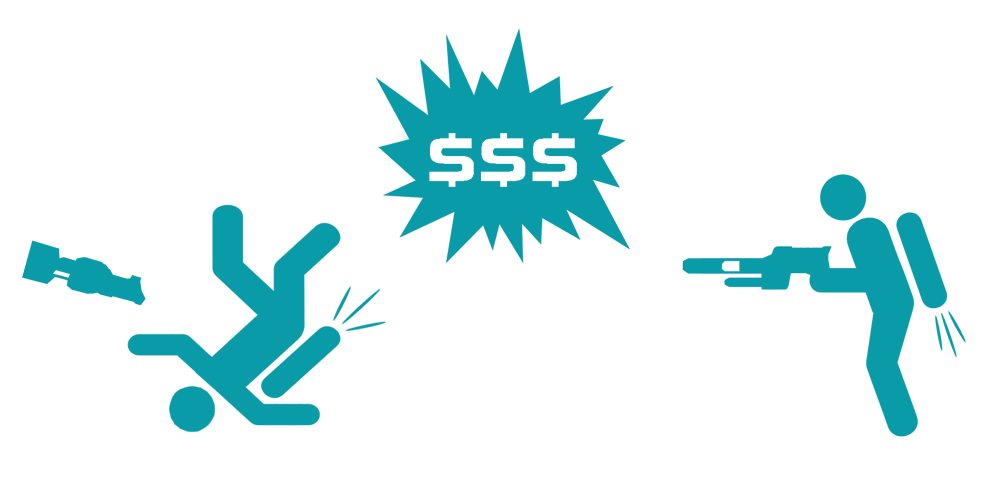

Capture the Flag
Capture the Flag is easily the most popular type of game in Tribes 2. CTF is a team based game where the objective is to get the enemies flag from their base while ensuring that your own flag is defended.
To capture, you must grab the enemies flag by touching it and return it to your flagstand. Your flag MUST be at it's stand in order to capture. If a player is killed while in possession of the flag, the flag drops to the ground. Unless it's grabbed by another teammate it will remain on the ground until it either returns to the flag stand by the enemy touching it or the return limit running out.
It should be noted that if a player goes out of bounds while in possession of the flag that the flag will be dropped on the edge of the out of bounds boundary.
When the flag is captured the capturing team receives 100 points. When the flag is grabbed from the enemy flag stand the grabbing team receives 1 point. The game ends when either time runs out (in which the team with the most points wins) or when the target number of captures have been met by a team (Usually 800 points).
Strategy
The most underlooked aspect of the game by newbies. You have to remember that THIS IS NOT YOUR STANDARD FPS. T2 is not just a run and gun shoot `em up. It's a thinking mans game, and if you don't act accordingly you won't last long.
Communication
In *any* team based game communication is essential. Let your team know what you're doing. Tell them the status of the enemy base. Give them as much information as possible so they know where your team stands and what they should be doing. Also, listen to what they're telling you. If the flag carrier is requesting backup, go give him a hand. If someone informs you of an enemy attacking the generators, go assist them. Respond to your teams requests whenever possible. I assure you it's worth the time and effort.
Move, Move, Move
As the title suggests, keep yourself mobile. A stationary target is an easy target, something you don't want to be. The obvious exceptions here are when you're in need of greater accuracy for, say, locking on with a Missile Launcher, or using the chaingun to pick off a damaged airborne enemy. Even still, in these situations keep aware of enemy positions. If you see an inbound Scout with his Disc Launcher pointed at you, get outta there. At any time when you're in the open and not moving, you make a very tempting target for snipers. This can be a problem, especially when in Scout armor. Keep this in mind when using outdoor Inv. Stations and Vehicle Pads as they are hotspots for sniper attacks.
Dress For Success
Equipment loadouts need to be suited to the task at hand. Going on a flag run? It's a good idea not to be wearing Juggernaut armor, as speed and mobility are essential. Defending indoors? Leave the Scout at home and get yourself some Jug. Think about what you're doing, what is required to do it, and equip yourself accordingly.
Loot the Corpses
When you kill a player he drops all of his equipment, ammo, and packs. When you run over said corpses you automatically pick up any needed equipment and ammo. This can be extremely valuable as running over every corpse you see will keep you well supplied and prolong your battle readiness. There's nothing worse than running out of ammo in the middle of a duel, so make sure you're well supplied at all times.
Remember the Health Kit
A number of times I've been in a duel with a player, and when I kill him I'll run over his corpse and pick up a health kit. This shouldn't be happening. The health kit can give you that little extra edge that means survival. Use it.
Know Your Role
Yeah, The Rock knows his stuff. Pick a task and stay with it. Decide what you're going to do, attack, defend, deploy equipment, and let your team know. When possible try to fill in where it's needed. If your flag is being captured every 2 minutes, defend. If no one is attacking, go offence. Try to be where you're most useful.
Armors

The Scout class armor is the lightest and fastest armor available for use. If mobility and agility are your thing, then Scout armor is what you'll need. A Scout can be in, flatten an enemy, and be gone before the enemy knows what hit them. Scout armor is limited in that it may not use certain heavy weapons, cannot carry certain deployables, and may only carry 3 weapons at a time.
Durability: Low
Mobility: High
Weapon Capacity: 3
Ammunition Capacity: Low
Specialties: Laser Rifle, Grav Cycle, Cloaking Pack
Restricted: Fusion Mortar, Missile Launcher, Remote Inventory,
Landspike & Spider-Clamp Turrets, Turret Barrels
Pros:
+ Fastest and most agile
+ Only class that can use the Laser Rifle
+ Can pilot ALL vehicles
Cons:
- Take the least damage of all armors
- Can't use some heavy weapons
- Can't carry certain deployables
The Assault class armor is the all around mix of the best of the Scout and the Juggernaut. It can take more damage than the scout, isn't as slow as the Juggernaut, and has only minor limitations compared to the other two. On the flip side, the Assault is not nearly as fast as the Scout, and can't sustain as much damage as the Juggernaut.
Durability: Medium
Mobility: Medium
Weapon Capacity: 4
Ammunition Capacity: Medium
Specialties: None
Restricted: Fusion Mortar, Laser Rifle, Grav Cycle
Pros:
+ Can take more hits and carry more weapons than the Scout
+ Faster and more agile than the Juggernaut
+ Minor restrictions
Cons:
- Slower than the Scout
- Not as durable as the Juggernaut
- Suitable for almost all tasks, but excels at few
The Juggernaut class armor is the big boy. When it comes to raw firepower, the Juggernaut is the only choice. A walking fortress, the Jug can flatten the opposition in a matter of seconds. Capable of carrying 5 weapons, including all heavy weapons, the Jug is a fearsome sight. It's main weakness is that it suffers a huge penalty in speed, making it easy pickins for a Scout or Assault class warrior.
Durability: High
Mobility: Low
Weapon Capacity: 5
Ammunition Capacity: High
Specialties: Fusion Mortar
Restricted: Laser Rifle, Cannot Pilot Vehicles
Pros:
+ Ability to sustain the most damage
+ Able to equip all heavy weapons
+ Able to carry the most ammunition of all Armors
Cons:
- Painfully slow, minimum mobility
- Cannot pilot vehicles
- Can be a walking target for lighter armors
Weapons
Primary weapons are the weapons a warrior carries in his hands. These can be divided into two types; Energy and limited ammo. Energy based weapons have unlimited ammo due to the fact that they draw from the users energy reserve to fire. Limited ammo weapons have a finite amount of ammunition that depends on the armor of the user.
Weapon damage is broken into two categories. Direct Contact and Splash. Direct Contact means that the weapons projectile must physically touch the enemy to inflict damage. Splash damage indicates that direct contact with the target is not necessary to inflict damage. The projectile will explode on whatever it hits first; enemy, wall, ground, etc. The resulting explosion inflicts the most damage at "ground zero", with decreasing damage inflicted in the area surrounding the explosion.
The Blaster is an energy based weapon with a high rate of fire. Think Star Wars.. same idea. The blast emitted from the blaster bounces off walls making it an effective indoor weapon.
The Chaingun is a limited ammo weapon that fires explosive bullets in a spread pattern. Due to the spread pattern of the projectiles fired, the chainguns effectiveness severely deteriorates as range increases. The chaingun is useful for picking off damaged airborne enemies.
The Elf (Electron Flex Projector) is an energy based weapon that causes no damage to the target. Instead, it drains the targets energy reserve, severely limiting the targets mobility. Caution should be used when using the ELF gun, as it will attack the closest target be it friend or foe.
The Fusion Mortar is the most devastating weapon in Tribes 2, a limited ammo weapon that lobs large mortars at the enemy. The mortar is primarily used as an offensive weapon, as it easily wipes out enemy defenses.
The Grenade Launcher fires standard explosive grenades at high velocity. It is a limited ammo weapon that is well rounded for both indoor and outdoor use. One of the main advantages of the Grenade launcher is that the grenades can be bounced off walls and around corners, making it ideal for clearing indoor rooms.
The Laser Rifle is the snipers best friend. This energy based weapon shoots a extremely high velocity laser in a straight line with almost unlimited range and precise accuracy. The damage inflicted by this laser depends on the location of the hit, the armor of the target, and the amount of energy the user has in reserve.
The Missile Launcher is a very versatile weapon. With it's ability to automatically lock on to suitable targets, it can be used for both offensive and defensive purposes. Targets that can be locked on to are enemy sensors and base turrets, enemy vehicles, and enemy players who's jet packs are heated from use.
The Plasma Rifle shoots super-heated balls of burning plasma at the enemy. You'll notice the firing rate is higher than that of the spinfuser, making it deadly if consecutive shots are achieved.
The Shocklance is a close range weapon that gives the enemy a zap! Taking a large chunk of health with each hit, the main advantage is the one-shot kill from behind.
The Spinfuser is a long range weapon that is general purpose or the swiss army knife of the game. It is the main weapon included in every load-out. It has good range, fly straight, and is much easier to midair with than the plasma rifle. The only drawback being reload time.
Grenades
Basic Grenade: The Basic Grenade is an explosive grenade that detonates after a few second delay. The resulting explosion inflicts moderate damage to the enemy; the severity of which depends on the enemies proximity to the explosion.
Concussion Grenade: This grenade inflicts minimal damage to the enemy. Instead, it creates a concussion blast that causes the enemy to drop weapons, packs, and flags. Caution should be used with the Concussion Grenade, as it can also cause the user and any teammates within range to drop their equipment.
Flare Grenade: This grenade inflicts no damage to the enemy. Instead, it creates a bright flare that serves two main purposes. The first and most useful is that it will decoy any missiles that are locked on to the user or his vehicle, drawing the missile away and disabling it's lock. Alternatively it can be used to signal teammates to a location.
Whiteout Grenade: This grenade inflicts minimal damage to the enemy. Instead, it creates a blinding flash that can distract the enemy for a few seconds. The severity of the blindness depends on the enemies proximity to the detonation. The Whiteout Grenade has an effective range of 20 meters. Caution should be used with the Whiteout Grenade, as it will also blind teammates.
Deployable Camera: This item is not actually a grenade, but it's included here because it is equipped in place of grenades, and activated by pressing the grenade button. The Deployable Camera, when activated, will be tossed like a grenade and stick to whatever surface it comes in contact with. The user can then leave the location and remotely view activity in the area via the Command Circuit. Can be used to detect Sensor Jammers.
Packs
The Energy Pack increases the rate of energy regeneration, thereby increasing jet mobility and use of weapons that draw off the energy cell. Required in order to equip with the laser rifle.
The Shield Pack when activated, this pack provides you with complete protection from all damage save the Blaster, the ELF, or lava. Protection only lasts as long as energy is available.
The Ammo Pack increases your armor’s magazine capacity for all limited ammunition weapons. Has no impact on your armor’s energy supply.
The Clock Pack while inactive, this pack jams sensors so the wearer is invisible to pulse sensors. When activated, it also makes the user invisible to visual detection (e.g., cameras and players). It has no effect on motion sensors. Deployable turrets cannot detect a warrior wearing a cloaking pack.
The Sensor Jammer Pack when not activated, this pack does nothing. When activated, it projects a field of approximately 30 meters radius and hides ALL players within the field from all MECHANICAL observation (cameras, pulse AND motion sensors). Therefore, turrets will NOT fire at a jammed person, though other players can still see the pack user. NOTE: IFF colored triangles will not appear for anyone in the sensor-jamming radius, so be careful!
The Repair Pack lets you restore an item or player to full health. To repair a target, you must have energy available and be at short range. Press “R” to access the pack’s repair projector. Aim it at the target and trigger it with the left mouse button. Aiming at nothing heals you instead.
Deployables
The Remote Inventory Station. Only Assault and Juggernaut armors can carry this smaller version of a base inventory pad. Teammates may obtain any inventory from this station except armors or another Remote Inventory Station
The Spider-Clamp Turret detects its targets using a pulse sensor. It is less formidable than the Landspike, and can be placed on any building surface or rock, but not on terrain. Note that “any building surface” includes walls, ceilings, and exteriors.
The Landspike Turret uses a pulse sensor to detect targets. It carries heavier shields and delivers more firepower than the Spider Clamp. It cannot be placed on rocks or any artificial structure, but must be deployed on level terrain
The Remote Detonation Satchel Charge. After deploying this powerful explosive, the user may detonate it by pressing “R” again. The charge requires a few seconds to arm after deployment.
The Remote Pulse Sensoris an advanced form of radar, that feeds data into the team’s sensor net the same way as larger Base Sensors. Expanding your sensor net helps increase your turrets’ effective range.
The Remote Motion Sensor is an item that detects movement within a limited range. A warrior can fool it by moving slowly and carefully. It is especially useful in detecting cloaked enemies.
Other Gear
Targeting Laser: The Targeting Laser is used for marking targets from a distance. When a target is marked by the laser, teammates are able to instantly lock on with the Missile Launcher, and will have lead calculation enabled with the Mortar and Grenade Launcher. It is also useful for defence by pointing out targets that need to be defended or the flag carrier.
Mine: The Mine is a weapon that is dropped on the ground. Once deployed the mine lies in wait for a passing warrior or vehicle to run over it. When this happens, the mine explodes causing moderate to severe damage. Mines will explode regardless of friend or foe coming in contact with it. Only 3 mines may be carried at a time by a user, regardless of armor equipped.
Beacon: The Beacon works like the Targeting Laser, but it can only be deployed by physically being in range of the target. Once in range, the user deploys the beacon which then allows for teammates to instantly lock on with the Missile Launcher, and lead calculation for the Mortar and Grenade Launcher. The beacon can also be used as a marker. If the user immediately presses H again after deploying the beacon, it will switch to marker mode.
Health Kit: The Health Kit is an item that will restore a small amount of damage to the user. A Health Kit may only be used once and only one may be carried at a time regardless of the armor equipped. The exception is if the user is wearing an Ammo Pack in which case two Health Kits are allotted for use.
Vehicles
The WILDCAT-Class Grav Cycle is a favorite of snipers and flag runners, the Wildcat is a ground hugging “Terragrav” built for blazing speed. Skilled Wildcat pilots build reputations as fearless daredevils… or absolute psychopaths.
The SHRIKE-Class Fighter is often typecast as an anti-Turbograv vehicle. However, its agility and heavy blasters make it quite effective in a ground support role. It also carries an advanced sensor suite that links into the Command Circuit and provides detailed intelligence on enemy movement.

The THUNDERSWORD-Class Bomber delivers massive firepower to the battlefield and is particularly effective against shielded targets. With a crew of 3 (pilot, bombardier, tailgunner), the bombardier controls the turret, bombs, and a targeting laser to point out targets to the pilot.
The HAVOC-Class Transport allows aerial transport of personnel across any terrain. Though unarmed, the ship can carry up to five Juggernaut armors, thus sometimes earning the nickname “gunship.”
The BEOWULF-Class Grav Tank while heavily armed and shielded, the Beowulf Terragrav is a fearsome mobile assault fire platform that crosses terrain and water with equal ease.
The JERICHO-Class Forward Base, while slow but heavily shielded, carries an inventory station and lets a team establish a forward base virtually anywhere on the map. At the desired location, the base plants itself and deploys its equipment.
Credits: ScratchMonkey, Sleef Barmer, Doh!, DigitalBlaze
Version 1.1b - Last Updated on 09/23/2001 - Created and maintained by fadeaway
CTF Demos
LakRabbit
What is LakRabbit?
Lakrabbit (“Lak”) is a special game mode in which contestants score points by competing for control over a neutral flag and inflicting specific types of damage to enemy players. The player with active control over the flag is placed on their own team and become the “rabbit” until killed by opposing players (“hunters”). Once the rabbit is eliminated their flag will drop and they will be switched back to the hunter’s team, allowing another player to grab the flag and continue the cycle. This process repeats until any player reaches 2000 points total which will end the match. Both the rabbit and those hunting the rabbit are awarded scaling point values based on the type of damage inflicted to opposing players. Lak focuses on rewarding players for their accuracy and precision, making it a favorite among enthusiasts looking to improve their shooting and take their combat abilities to the next level.
“I’ve played Rabbit before, how is Lak different?”
While both Rabbit and Lakrabbit involve keeping ownership of the flag, Lak differs fundamentally in approach. In most modes of Rabbit, players are encouraged to play “keep-away” with the flag and score most of their points by avoiding the enemy hunters. In Lak the rabbit is incentivized to fight back against enemy hunters as they can score more points through inflicting damage on opponents. Generally speaking, players will be unhappy with rabbits that spend more time running than fighting, and rabbits who engage their opposition will score more points than those who don’t.
Basics of Scoring Strategy
Rabbits are rewarded with points-over-time which accumulate as they retain control of the flag. While relatively minimal, these points can add up greatly over the course of a match. Keep in mind that every point the rabbit scores from control over the flag is a point others are denied, further lengthening scoring gaps.
In addition to points-over-time, the rabbit has a greater selection of enemy targets to shoot at than hunters, and thus can capitalize on greater flexibility over their engagements. Similarly, hunters are able to capitalize from the rabbit being forced to focus on more than one target, allowing them to benefit from surprise attacks and openings in the rabbit’s defense. While the rabbit is technically at a scoring advantage over other players, both the rabbit and the hunters can effectively score points and compete for the 2000 point victory.
With the understanding that control over the flag offers an edge in point scoring, the bulk of points a player scores will source from damage inflicted made on opposing players. This is why a player who never touches the flag can still technically win, albeit missing out on the advantages of being a rabbit. In more competitive of settings, every player should try as hard as possible to be the rabbit as often and as long as they can. In more casual settings players can find a balance of rabbit vs hunter gameplay, choosing whether to be a ball-hog or sharing the flag with others.
Restrictions in Lak
Lak differs from most other game modes in that there is a limited pool of weaponry and means by which you can score points/inflict damage on opponents. The biggest difference is that splash damage is disabled by default. As stated in the introduction above, the true spirit of Lak is in emphasis on accurate and precise shooting. Only projectiles landing directly on enemy players will score points, with the exception of hand grenades, mines, and long distance shots (which awards points but does not inflict damage). The only weapons selectable in Lak are spinfusor, shocklance, blaster, grenade-launcher, fusion mortar, hand-grenades, and mines. Players may still select between Light, Assault, and Heavy, although Light is by far at an advantage over other load-outs (you will basically never see assaults or heavies unless they are just having fun).
Out-of-bounds grid
The normal green out-of-bounds grid in Lak functions differently than most other game modes. In Lak the grid is a solid barrier which players cannot pass through. When contact with the grid is made, the player will instead bounce/reflect off the grid at an opposite angle/direction. Players will bounce with higher momentum depending on their incoming speed when making contact. Some maps such as Mini-Sun Dried have red force field across the grid which serves similar to the ropes in a wrestling ring. The two “ropes” are positioned slightly above the ground and will catch the player stopping them if they make contact. Players who touch the ropes will often be vulnerable to attack for a few minutes as it often causes players to get stuck to the rope for a second before falling.
Spawning & Invulnerability
Players will respawn in a sphere within close vicinity of the flag’s location. In more recent versions of Lak, the radius is normally smaller and players will often respawn very close to the flag or rabbit. Sometimes it can be faster to suicide and respawn near the flag than it is to catch up to it. Newly spawned players will be invulnerable to damage for a few seconds or until they fire a weapon. The rabbit will also gain temporarily invulnerability when grabbing the flag, giving them priority to make the first move or to put distance between themselves and enemy hunters.
Hunters are also afforded with unlimited invulnerability to their own discs, so long as the shot did not also damage the rabbit. This means that hunters can disc-jump as many times as they need, giving them a movement advantage against rabbits.
Power-ups
There a number of special effects that exist exclusively in Lak. These “power-ups” help keep things a bit more exciting:
Point Calculations
Points for successful shooting will award based on various factors attributed to the weapon type being used. When players score damage a message is broadcasted to everyone displaying the values of each factor and the total points awarded. In addition to the chat message, a ringing noise (cash register, “cha-ching!”) will indicate a scoring shot was made. The message broadcasted will display in the following format:
Example
Lone Wolf scores 61 points [Mid-Air Disc] [Distance: 50m] [Speed: 123kph] You receive 53 points [Mid-Air Shocklance] [Distance: 12m] [Speed: 33kph] [Height: 60m]
Factors by Weapon
Types of scoring shots
Flag-based scoring
Optional Modes
Lak offers a variety of modes which by default are disabled but can be voted on. These modes are usually selected to prevent players from running or favoring the ground too much.
Lak Demos
Script Guide
Wing's Script Guide - Written on: May 26, 2014, 05:50:33 PM
Hello Tribes 2 Community,
Tribes 2 has been an ever-evolving game since its publication in 2001 by the actions of numerous modders, map-makers, skinners, and scripters. While many players will happily dispute the ethics of modifying their base Tribes Next install, the fact is that most competitive players play a heavily-modified version of the game by using scripts. Many of the features now standard in first-person shooter titles are present in Tribes 2 only in script form. Examples include network smoothing factor (see interpolate below), field-of-view adjust (see zScript-WeaponFOV or uberZoom), radar minimap (see borCChud below), or vehicle mouse sensitivity (see PilotModeIII).
Most of these scripts are made to gain an advantage over other players, while many are solely aesthetic in nature. It is my expectation that a more balanced playing field will result from these files being available to the entire community. Additionally, these files present the opportunity to modernize Tribes 2 by including some in future Tribes Next releases. I hope that this post fosters a discussion of what direction to take.
Necessary
Advantageous
Heads up displays (HUDs)
Command console (CC) and Navigation
Aesthetics and indicators
Fun Extras
This link below contains every script that I have found essential or useful to the Tribes experience as I know it.
How to use these files: The textures folder goes in gamedata/base, .vl2 files are compressed folders (opened by winzip or similar tool) that also go in gamedata/base, and .cs files (opened in wordpad or similar) go in gamedata/base/scripts/autoexec.
Well, that's it. Have fun.- Winged Warrior